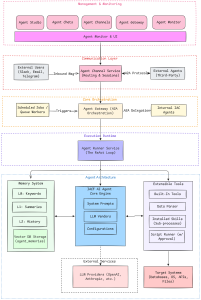

Introduction to IAC AI Agent Studio
The IAC AI Agent Studio is a production-grade multi-agent orchestration platform built directly into the IAC application framework. At its core, the platform allows developers to create, configure, and manage AI agents, which serve as AI assistants equipped with specific purposes, execution behaviors, and toolsets.
The studio is highly versatile and model-agnostic, supporting a wide range of Large Language Models (LLMs) including OpenAI, Anthropic, Google, Azure, and Ollama. By granting these agents access to databases, file systems, operating system services, and external messaging channels, the platform empowers them to handle complex, real-world workflows. Furthermore, agents can be deployed as scheduled jobs, queue workers, or continuous integration hubs, making them suitable for robust enterprise automation.
You may see how AI Agent - IACF Data Analyst works from following video:
https://youtu.be/M0cjeCjokYU?si=KYLJW6Ip9Yx2Mv9YYou may see how AI Agent - IACF UI Design Agent works from following video:
https://youtu.be/YaYJVElRUuU?si=RgYwq5e3vThjkqO4Architecture Overview
The architecture of the IAC AI Agent Studio is highly modular. It combines a core reasoning engine with specialized subsystems for memory, external connectivity, and dynamic tooling.

IAC-AI-Agent-Studio-Architecture1. The Core Execution Engine
-
The ReAct Loop: Every agent run within the platform is fundamentally driven by the "ReAct" (Reason + Act) loop. This continuous cognitive cycle allows the LLM to generate thoughts, invoke tools to gather necessary observations, and act on the environment until the requested task is fulfilled.
2. Tooling and Extensibility
The platform features a layered tooling architecture that provides agents with both immediate capabilities and extensible skills:
-
Built-in Tools: Every agent is automatically injected with foundational tools out-of-the-box, such as
memory_search,memory_read,memory_save, andsend_to_agent. -
Installed Skills: Capabilities can be extended without modifying the IAC core codebase by installing external skill packages. These skills run as subprocesses using external programs like Node.js scripts, Python modules, or Bash scripts.
-
Script Runner: When agents encounter a task that requires ad-hoc capabilities, they can utilize the Script Runner to dynamically generate and execute code in Python, Bash, PowerShell, JavaScript, or Go. Because code execution carries risk, the Script Runner includes a built-in human approval workflow for write or destructive operations.
-
Data Parser: This subsystem allows agents to consume and parse highly variable data—such as IoT sensor readings, EDI interchange files, CNC machine logs, or legacy mainframe fixed-width files—using natural language parsing rules.
3. The 3-Layer Memory System
To ensure agents can maintain persistent context and learn over time, the studio implements a dedicated, per-agent memory system categorized into three layers:
-
L0 (Keywords Layer): A permanent indexing layer that relies on keyword sets and Jaccard similarity to provide extremely fast search lookups.
-
L1 (Summary Layer): Retained for 180 days, this layer stores an LLM-generated summary (roughly 200 words) of interactions, providing readable context injection for future tasks.
-
L2 (Full History Layer): Retained for 90 days, this layer contains the complete, raw JSON of the conversation history for deep analysis and auditing.
4. Communication and Interoperability
-
Agent Channels: Handled by the
AgentChannelService, this subsystem connects agents to users across external messaging environments. It supports over 15 channel types, including Telegram, Discord, WeCom, Slack, Teams, and Email. The service safely manages inbound message routing, per-sender rate limiting, and session state tracking. -
Agent Gateway (A2A Protocol): For multi-agent orchestration, the studio implements the Google A2A (Agent-to-Agent) JSON-RPC protocol. This allows a central orchestrator agent to seamlessly delegate tasks to specialist sub-agents, orchestrate asynchronous task pipelines, and even communicate with external, third-party A2A-compatible systems.
5. Configuration and Management
-
Configuration Files: System-wide AI settings—such as enabling vendors, assigning API keys, and picking default models—are managed via a centralized
aiconfig.jsonfile, with local environment overrides provided byaiconfig.local.json. -
Agent Management: Administrators can create, configure, and manage their fleet of agents via the web-based Agent Studio Portal or programmatically using REST APIs.